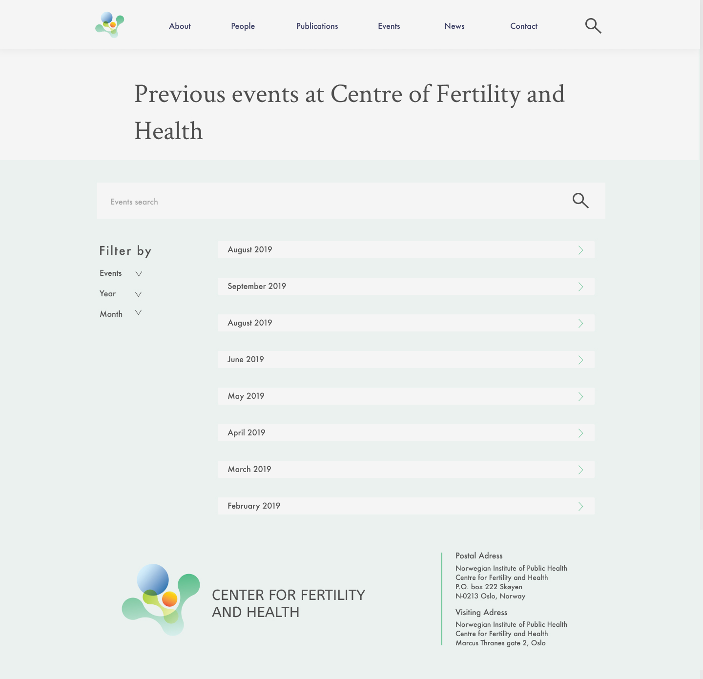
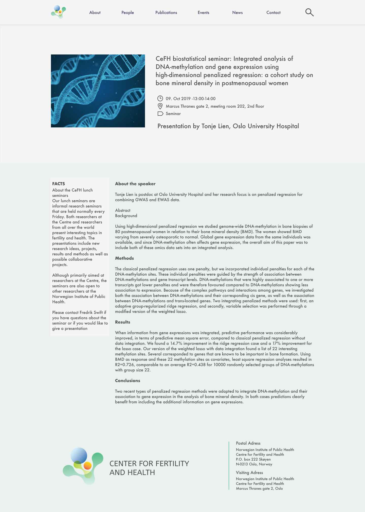
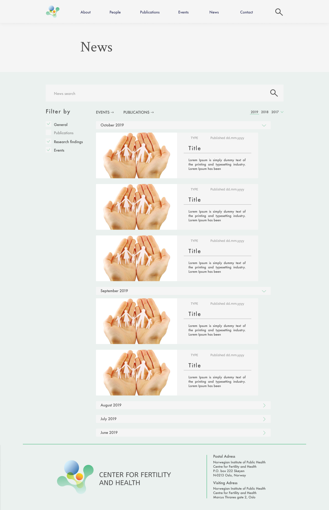

P2 Design Guidelines
1. Document Details
- P2 Design Guidelines
- Kristin, Emil, Oda, Kari, Rikke
- IT2805 8 October 2019
2. Administrative Details
- Client name: CEFH - Center for Fertility and Health
- Website name: CEFH.no
- Contact person: Siri Eldevik Håberg, Deputy Director
3. Purpose, goals and audience
The website is supposed to work as a platform for CEFH, where they can make their projects, employees, upcoming events and research articles available to other researchers. Our goal is to present this in a suitable manner, so that they can continue gaining money from sponsors and recognition from fellow researchers. The websites main audience is reserchears, as well as potential sponsors.
1. Document Details
- P2 Design Guidelines
- Kristin, Emil, Kari, Oda, Rikke
- IT2805 8 October 2019
4. Navigation Structure
CEFH’s website has a navigation structure based on the hierarchy model. Every site of the website will be reachable at any time, thanks to a menu bar that will be present on every site. In addition, some of the sites will link to each other, shown specifically in Figure 1.
We want to make a flexible website that makes all the content easy accessible. That is why we include a global menu bar. To make a website that feels natural and has a good flow, we also include some links between the different pages.
5. Page Layout and Appearance
One of the main design goals is to create a comprehensive site with a professional and scientific look. In order to achieve this we focused on making the components of the site universal in order to achieve continuity throughout the whole site. Another goal was to make the site easy to understand, with a simple conceptual model and navigation structure. The navigation bar at the top of each page provides easy access to the other pages on the site, making both the navigation and site structure easy to understand. It also provides a site-wide search-box, should the user wish to find something specific immediately. The logo on the left side also functions as a home button, taking the user back to the landing page. There will also be a banner at the bottom of each page, containing simple contact information, with the “contact”-title also functioning as a button to the main contact page.
The specific site-wide styling is listed below:
Fonts- Header
- Crimson text, regular, 64pt
- Sub-header 1
- Futura, medium, 36pt
- Sub-header 2
- Futura, medium, 24pt, letter spacing 10%
- Body text 1
- Futura, medium, 16pt
- Body text 2
- Futura, medium, 14pt
- Text
- Dark grey rgb(79,79,79)
- Background
- White grey rgb(245,245,245)
- Boxes
- Light grey rgb(232,232,232)
- Links
- When hovering a link, there will appear an underlinde - indicating that the link is clickable, as well as changing colour to green (rgb(104, 195, 148)) when hovering the link.
- Underlines - symbols etc
- Green rgb(104, 195, 148)
- Margins:
- 200px right and left
- Navigations bar
- Will be located at the top of the page. When hovering a link, a line will appear under the link indicating that it is clickable, with a similar line underlining the active page.
- Footer
- Will be located at the bottom of each page, containing contact information
These design desicions are based on our focus on keeping the site proffesional and readable. We have chosen subdued colors for background and other elements. This will keep it clean, but not too boring with just black and white. We believe that the website will be proffesional, and the people visiting it will be used to this type of design and layout, which makes it easy for them to navigate themselves around the site.
6. Content
- homepage.html

The first thing to appear when visiting the website is the homepage. This page will include a menubar, the CeFH-logo with some additional information, news, recently published articles, upcoming events and the footer.
This page will give the user an oversight of who CeHF is and what they do. More detailed information is easily accessible, either by using the menubar, or through links from the other content further down the page. Whitespace has been important for us to include, as it makes the information easier to process for the user. To organize the content, we chose to use two different background colors. A stronger color on graphical elements was included to make the page more vibrant.
Through the use of Javascript, a number of functions will be added to the homepage. One function will enable horisontal scrolling on the news articles. Another will make the pictures appear one after another when first entering the page. The third will make it so that boxes also works as links. This will work when you hover over the box, scaling it up by approximately 10%.
- about.html

The about page will give information about what type of research that is being done at the Centre. Below the header is a short paragraph which states the centre´s scientific goal. Below there is detailed information about the research. Under this there is a list that sums up their research projects in five general themes. This list has a list-style-type of dots in the color #68C394. This is the same color that is repeated troughout the website in different features. Under the list of themes you can find a downloadable pdf of the annual report the Centre provides. The content mentioned above is confined within a box that is 1440x1049px big, in the same color as the boxes around the headers of each page, #F5F5F5.
Under this box the user can find information about which data sources the centre uses in its research. These are different population-and health registries, and cohorts. Under each of these the different registries are listed, using the same list style as the previus list of themes. All of the lists on the about.html page are centered in the middle of the page.
- people.html

The first page you arrive at is the overview of all people that work at the centre. Below the header there is a brief paragraph about what type of people that are employed at the centre. Below this paragraph there is a list of contents on the left side, that is 290x313px big. This contains a grouping of the different type of employees. When you hover over each item of the contents list the text will appear darker and on click the user will be scrolled down to chosen category of employees. The contents list will be locked in position when scrolling further down the page so that users at any time can manouver through the different categories which makes it easier for the user to navigate, as this page contains a lot of images (aka a lot of scrolling).
On the right side the categories are placed under each other, with pictures of the employees that are the size 164x218. Under each picture the name, title and phone number of the person is shown. On hover the pictures and info will scale up so that the user understands that it is clickable. On click you will be taken to each persons profilepage. In this course we will not have the capacity to make a profile page for each person as there are many people working at the centre, but we made an example of how the page can look for one person (our contact person).

Each person will have their own "profilepage" where more detailed informartion about them is published. The header will consist of the name, their title and contact information on the left side, and their picutre on the right side (size 264x390).
Under this there is a paragraph with background information; their education, spesialization and previous and current research areas.
Under this there is a list of projects that the person has done and/or contributed in. These projects are links that take you to another page with further description (not made in this project). When you hover over each item in the list it will appear with an underline, so the user understands that it is clickable. The list also have the list-style-type dots in the same green color as before, #68C394.
After the list of projects there is a table of publications. These are divided into three categories. When you click on each category it shows the publications within each category. The two other categories will then appear in a lighter grey, #8d8d8d, to signify that they are not selected. Inside the table the publications appear with all authors, title and name of journal. The table is outlined with a thin white frame.
- publications.html
This page will contain a complete list of all the publications from CEFH since it first started in 2017. Right below the header there is a dedicated search bar for searching through publications only, this will give users easy access if they are looking for specific content. Below the search bar there is a link to the "people" page, if users wants to se publications from a specific person.
The publications are presented on the right side of the page as a list of boxes including title, authors and date. They are sorted chronolgically. If you hover a box it will scale up by a little to indicate that it can be pressed. On click you will be taken to an external publishing site.
On the left side of the page there is a contents menu that includes the years 2019-2017 for easy access to the desired year of publication. On hover the text will appear darker and on click the user wil be scrolled down to the headline of the chosen year. The menu also has four different check boxes for different types of publications; scientific articles, books, book chapters and reports. When checked the text will appear darker. The contents meny will be locked in position when scrolling further down the page so that users at any time can manouver through the different years of publication and types of content.
- events.html
The "event" page will showcase all the events held by the center. Under the header on the right side, there will be a list of all the upcoming events, categorized in which month they will happen. Each event will have its own box, containing a picture, a description, time, place, type of event and person in charge of the event. The month is a drop down-bar, so if you click on the drop-down arrow icon, the events from the following month will not show. This way you can easily access events whitch will occur in other months than the current. There is also a filter function on the left side of the page, where the events can be filtered depending on the type of event(seminar, conference, etc.) and month.
Underneath, there is also a link to previous events. This page will be quite similar as the main event page, but all the drop downs from the monts will be up, as there will be a lot more months to choose from. There will also be a search bar here, and a filter function.
When clicking on a specific event, one will be redirected to the corresponding page of that event. There will be a picture at the top left, and a header with the title of the event. Under the header there will be information about time, place, type of event and perosn in charge. Under the practical information, there will be more detailed information about the event, on the right side. On the left side there will be a "Facts" section describing what type of event it is.
 - news.html
The news-page will showcase the centres newsfeed, divided into months and years. “News” includes everything with mentioning at the centre; visits, events, publications etc. Each of the articles will have a tag to describe what kind of “news” it is. It will be possible to filter the news based on the aforementioned tags. Below the header there will be a search field where it is possible to search for specific news
The news are presented as boxes on the right site, containing a picture, title, tag, publication date and a short synopsis. Each of the month-branches can be collapsed to easier navigate the news-feed. When you click on an article, you will be taken to the relevant page.
Right below the search field at the top, there are links to the publications- and events-site for easy access to the most relevant pages regarding the news feed.
- contact.html
The contact page includes more detailed contact information for the centre than the footer. On the left side there will be clickable symbols to the centres social media profiles. In the middle there will be a form for contacting the centre instantly, and on the left there will be a map showing the centres location as well as their street- and post adresses. The visiting adresses and map will link to google maps so users can obtain easy directions.
The profiles of the three top executives will be displayed below the contact form - linking to their profile pages for detailed contact info. The footer on this page will only contain the logo.
7. Minimum requirements
We plan to fulfil the minimum requirments of Javascript applications in this way:
- 1.domino.js: Kristin will be in charge of implementing a Javascript function that will make the pictures on the homepage and people page appear one after another when first entering the pages This will make the otherwise static page a bit more dynamic.
- 2.newsscrolling.js: Emil will be in charge of implementing a Javascript funciton that will make the news articles on the homepage scrollable horisontally. This is to allow the viewer to check out more news.
- 3.filter.js: Oda will be in charge of implementing a Javascript function that will filter viewable content on the publication page, news page and the events page. This is a function that will allow the user to filter the information they would like to see themselves, so they dont have to scroll trough exessive information.
- 4.table.js: Kari will be in charge of implementing a Javascript funciton on the profile page that allows the user to choose between different categories in a table that shows different types of publications.
We might also add more javscript functions later if we find it suitable.
8. Plan
Organizational Scheme
The following files will be gathered inside a folder in our GitHub, and they will be created in the coding phase, P3.
List of Files and Folders
- homepage.html
- about.html
- people.html
- profilepage.html
- publications.html
- events.html
- news.html
- Modularity/
- menu.html
- footer.html
- Images/
- logo_CeFH.png
- sfflogo.png
- profilepic1.png
- .....
- profilepic40.png
- NCoE.png
- map.jpg
- articlepicture1.jpg
- ......
- articlepicture30.jpg
- CSS/
- styling.css
- homepage.css
- about.css
- people.css
- profilepage.css
- publications.css
- events.css
- news.css
- Scripts/
- domino.js
- newsscrolling.js
- filter.js
- table.js
What we need from our client:
- contextual content for all the pages
- images of all employees
- logos for CEFH and SFF
- pictures for news articles and events
- annual report pdf
- CV for all employees (if we have time to make profile pages)
Work Division and Deadlines
| Filename | Description | In charge | Deadline |
|---|---|---|---|
| homepage.html | The homepage | Rikke | 06.11.2019 |
| about.html | Some information about CEFH and their research | Kristin | 06.11.2019 |
| people.html | People working at CEFH | Kristin | 06.11.2019 |
| publications.html | The A list of CEFH publications | Kari | 06.11.2019 |
| events.html | Upcoming and previous evets | Oda | 06.11.2019 |
| news.html | A collection of recent happenings/ publiations etc. | Emil | 06.11.2019 |
| contact.html | Centre contact info | Emil | 06.11.2019 |
| menu.html | Navigation bar at the top of the page | All | 06.11.2019 |
| footer.html | Contact info etc. | All | 06.11.2019 |
| profilepage.html | All info about one employee at CEFH | Kristin | 06.11.2019 |
| eventpage.html | All info about one event | Oda | 06.11.2019 |
| styling.css | General styling for all pages | All | 06.11.2019 |
| homepage.css | Styling for the homepage | Rikke | 06.11.2019 |
| about.css | Styling for the about page | Kristin | 06.11.2019 |
| people.css | Styling for the people page | Kristin | 06.11.2019 |
| profilepage.css | Styling for profile page | Rikke | 06.11.2019 |
| publications.css | Styling for the publications page | Kari | 06.11.2019 |
| events.css | Styling for the events page | Oda | 06.11.2019 |
| news.css | Styling for the news page | Emil | 06.11.2019 |
| domino.js | Fading in one picture at a time | Kristin | 06.11.2019 |
| newsscrolling.js | Scrolling horisontaly through resent news | Emil | 06.11.2019 |
| filter.js | Filter content showing on the page | Oda | 06.11.2019 |
| table.js | Choose content based on different categories | Kari | 06.11.2019 |